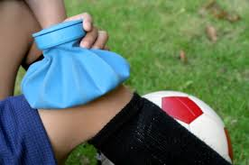
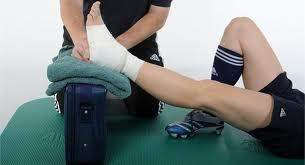
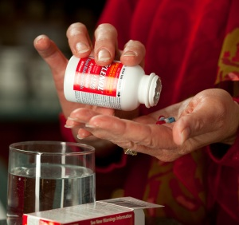
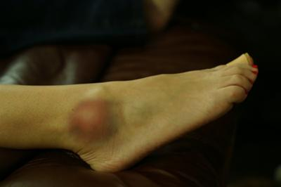
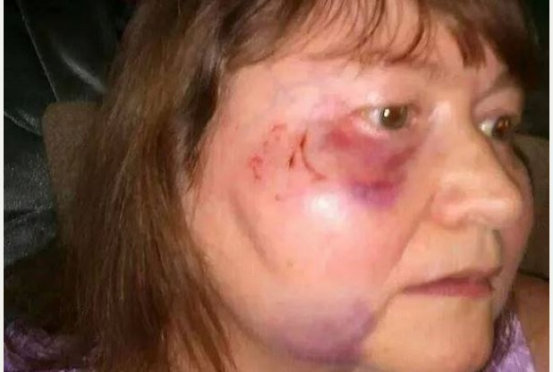
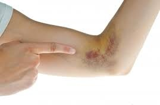

TREATING A BRUISE AT HOME
1. Reduce Bruising and Swelling
- Ice the area on and off for the first 24-48 hours.
- Apply ice for about 15 minutes at a time, and always put something like a towel or wash cloth between the ice and your skin.
- 
- Rest the affected area.
- If possible, elevate the affected area.
- 
2. Treat Symptoms
- For pain, take acetaminophen (Tylenol). Avoid aspirin or ibuprofen (Advil, Motrin), which can prolong bleeding.
- 
3. When to Call a Doctor
- If bruise is accompanied by extreme pain and swelling, especially if the person is taking a blood-thinning medication
- 
- If bruises appear on skin for no apparent reason
- The bruise in on the face or head
- 
- You can’t move a joint
- 
- You may have a broken bone
4. Follow Up
- Two days after a bruise develops, apply a heat pack or wash cloth soaked in warm water to the area several times a day to promote healing.
- Pain and tenderness should get better within a few days and the bruise should go away within a couple of weeks.